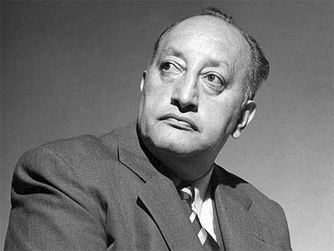

Miguel Angel
Se graduó de abogado en la Universidad de San Carlos, en Guatemala, donde participó en la lucha contra la dictadura de Estrada Cabrera, hasta que éste fue derrocado en 1920. Dos años después fundó y dirigió la Universidad Popular; ya en ese entonces había publicado sus primeros textos. Partió luego a Europa, donde vivió intensamente los movimientos y sucesos que la transformaban, y estudió lingüística y antropología maya en la Sorbona con el americanista Georges Raynaud; de esa época es su traducción del Popol Vuh, junto con José María Hurtado de Mendoza.
